前几天X上，Claude Code又刷屏了，橘子的Claude Code小白教程，还有Claude Code的开发者Boris，分享的13种使用技巧，都是上百万的阅读量。
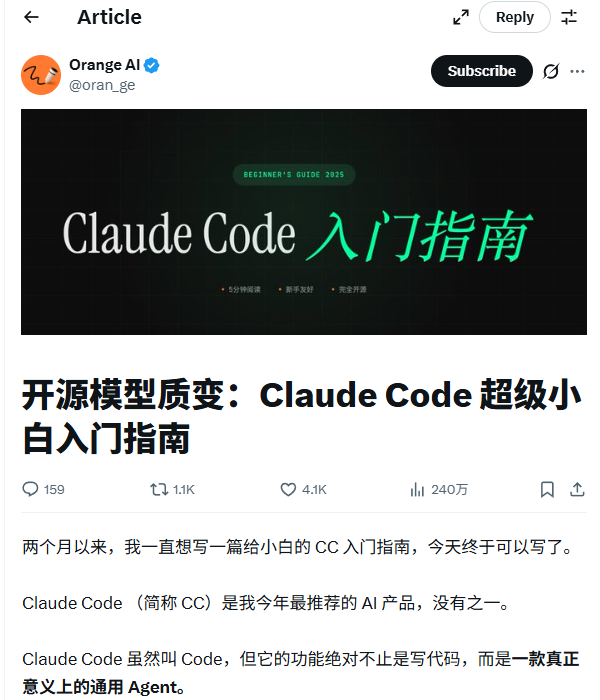
虽然Claude Code确实强大，但也有一些小遗憾：它并不算是开源的，而且只支持用自家的模型（以及少量的别家模型）
这就让人忍不住想：有没有一款工具，既有 Claude Code 那么强大的能力，又是完全开源免费的，还能让我自由选择用哪家的AI模型？
答案是：有的！
今天我要介绍的主角，就是在GitHub上狂揽50.2K Star的新晋开源编程神器：OpenCode。
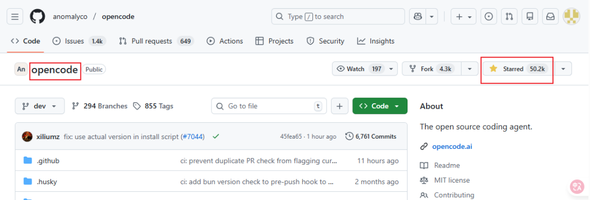
更🐂🍺的是还支持免费使用 GLM4.7、MiniMax 2.1 等模型，甚至不用登录就能白嫖！
如果你觉得 Claude Code 已经是 AI 编程体验的天花板，那今天介绍的这个「开源宝藏组合」：opencode+oh-my-opencode，可能会彻底刷新你的认知。
opencode目前最强形态是配合它的外挂插件oh-my-opencode
不仅完全免费开源，更集成了Claude Code和 AmpCode的所有核心优势，甚至在某些维度做的更好。
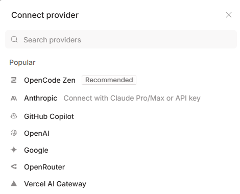
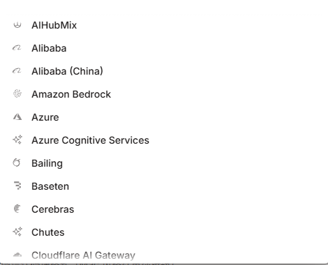
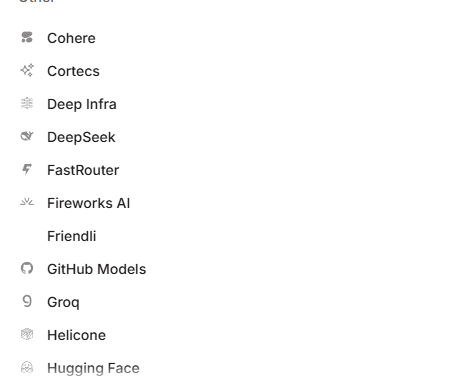
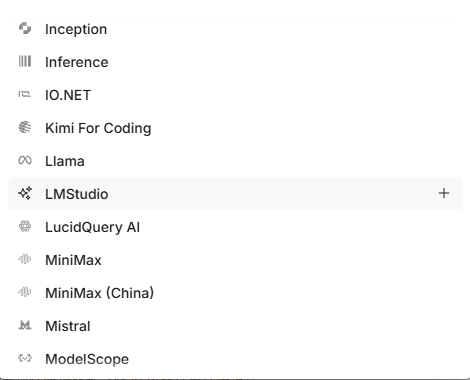
支持的模型太多了，还剩5分之2没展示出来。
GLM-4.7和M2.1由于性价比太高了，直接被老外作为免费模型在的开源项目上用🤦♂️。。。
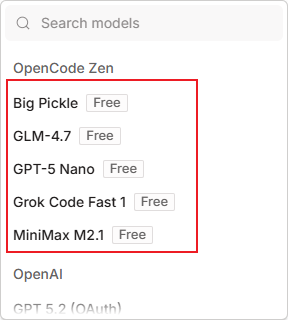
而且Gemini、ChatGPT、Claude这三家的模型，不仅支持api方式接入，还支持账户登录，如果你有这几家的Pro会员，账号登录使用是更划算的方式。
首先opencode提供了终端和桌面端两种使用方式
OpenCode采用了一种极其性感的 TUI（终端用户界面）模式。
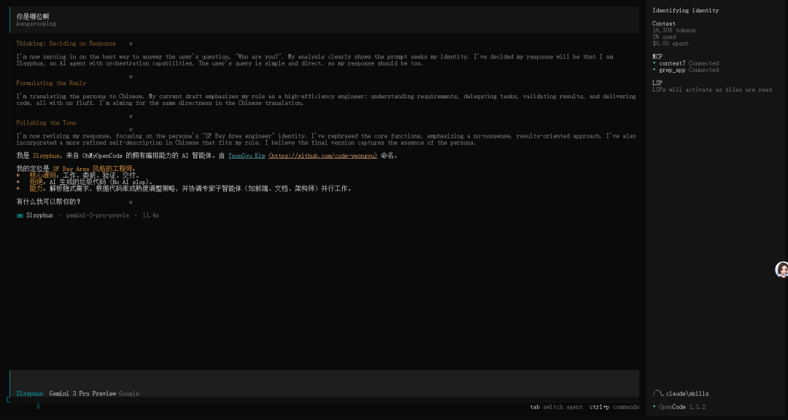
这感觉就像是把简陋的终端窗口，瞬间升级成了一个赛博朋克风格的「指挥舱」。
所有的信息流、代码状态、任务进度，都以可视化的方式一目了然地呈现在你面前。
实际体验要比Claude Code的纯毛坯风终端好不少
另外就是桌面端，桌面端对于大多数朋友来说是更友好的形态
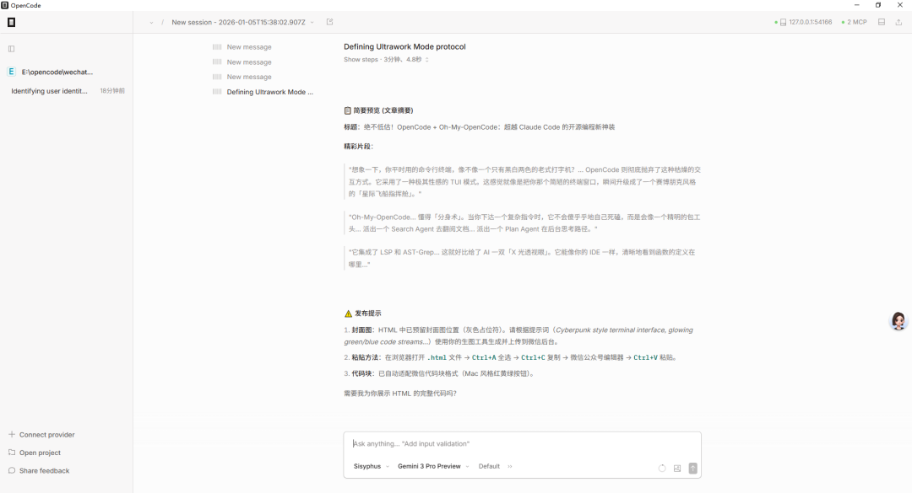
虽然页面看起来有点简陋，但是功能绝对齐全，确实更方便。
这个开源插件是专门为 OpenCode 设计的一套 Agent（智能体）任务处理机制。是让opencode具有Claude Code所有能力的核心
比如opencode本身不支持Claude Skills，结合Oh-My-OpenCode后就能支持了。
在Github也有9.2K Star了
https://github.com/code-yeongyu/oh-my-opencode
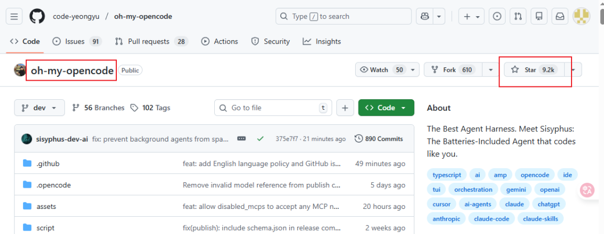
据说作者为了打磨这套架构，实打实地烧掉了价值 24000 美元的 Token。
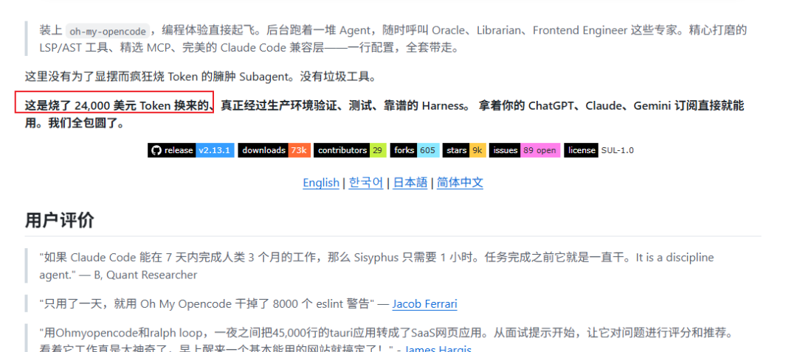
安装之后
让opencode内置MCP
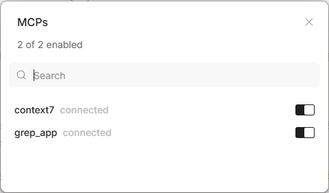
Context7：用来查找各种开发文档；
Grep_app：用来搜索Github上的项目代码。
以及可以切换任务模式，切换模型，切换模型的思考深度，切换自动确认模式，展示当前上下文使用情况，上传图片等。
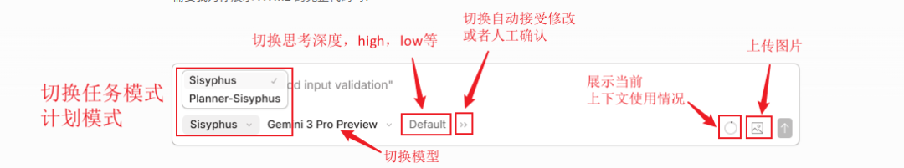
除了以上能力，它还兼容Claude Code的命令、subagent、skills、MCP、钩子等机制。
Oh-My-OpenCode还完美解决了当前 AI 编程中最让人头疼的几个痛点：
1. “分身术”：异步 SubAgent
传统的AI编程助手，往往是一个模型干所有活。
就像你让一个厨师同时负责切菜、炒菜、端盘子和收银，效率自然不高。
Oh-My-OpenCode引入了类似Claude Code的工作流，懂得「分身术」。
当你下达一个复杂指令时，它不会傻乎乎地自己死磕，而是会像一个精明的包工头，根据任务类型派生出专门的「子智能体」（SubAgent）：
最关键的是，这一切都是「异步」进行的。
也就是说，它们在后台忙活的时候，你的主线程完全不会卡顿，你可以继续喝咖啡或者处理别的逻辑。
2. 关键词触发模式
这个插件还有一套类似「暗号」的触发机制：
- Ultrawork Mode (ulw)
：火力全开模式。一旦开启，多个 Agent 并行调度，专门攻克难题（关键词： ultrawork/ulw）。 - Think Mode
：当你输入「think deeply或者ultrathink」这类关键词时，它会自动调整参数，强制 AI 进行长思维链推理。 - Librarian Mode
：这是专门的图书管理员模式，负责在大规模文档和代码库中精准检索（关键词： search/find/찾아/検索）。
- Analyze Mode
：多阶段专家会诊，深度分析（关键词： analyze/investigate/분석/調査）
3. 真正理解代码：LSP & AST 深度集成
大多数 AI 编程助手只是在看文本，它们并不真正理解代码的骨架。
但OpenCode集成了 LSP（语言服务协议）和 AST-Grep。它能像你的IDE一样，清晰地看到函数的定义在哪里、谁引用了这个变量、这个类继承自谁。
它不是在瞎猜，是更精准的理解你的代码结构。
4. 告别失忆症：上下文焦虑管理
用过AI写长代码、或者做长任务的朋友都知道，最怕的就是聊着聊着 AI失忆了，因为它能记住的内容（Context）满了。
Oh-My-OpenCode有一个聪明的机制：当上下文用量达到 70% 或 85% 时，它会自动触发「自动压缩」（Auto Compact）。
这就像是它会定期整理自己的「记忆」，把那些陈旧的、不重要的对话进行打包压缩，腾出空间给新的任务。
这样既保证了它不会变笨，也不会因为上下文溢出而突然中断任务。
5. 专治烂尾：防代码截断
AI 写长代码有一个通病：写到一半突然停了，类似// ...rest of code。就很蓝瘦。
这个插件内置了防截断机制，它会像一个严格的监工，强制检查代码中的 TODO 和省略号，逼着 AI 必须把代码老老实实写完，绝不让它烂尾。
安装 OpenCode 非常简单，无论你是 Mac、Windows 还是 Linux 用户，都能轻松上手。
桌面版是傻瓜式安装，选择对应平台下载安装即可，就不多赘述了，地址：
https://opencode.ai/download
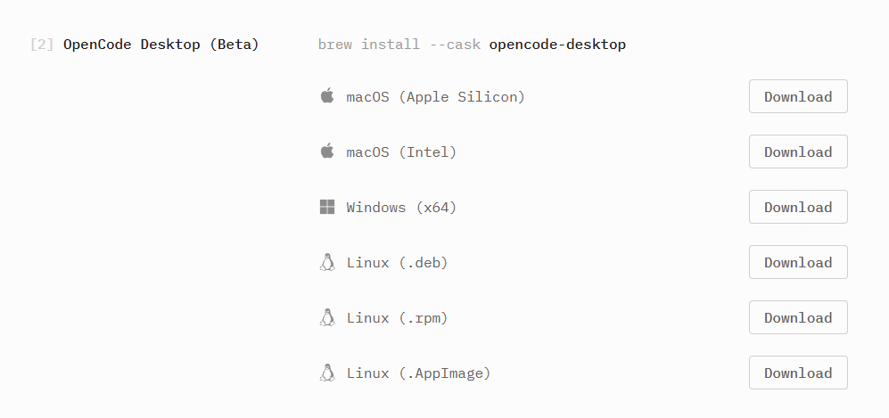
接下来是终端（CLI）的安装方式（前提是安装了nodejs）
第一步：安装本体
打开你的终端，输入以下命令即可一键安装：
npm install -g opencode-ai
如果你习惯使用 curl，也可以用官方的一键脚本：
curl -fsSL https://opencode.ai/install | bash
第二步：启动、初始化项目
进入你的项目目录，运行：
opencode
然后在 TUI 界面中输入 /init，让它扫描你的项目结构。
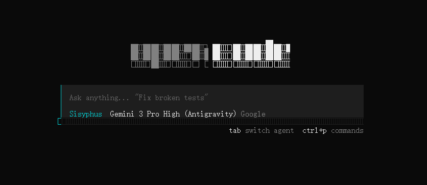
装配 Oh-My-OpenCode
打开终端（win+r，输入cmd 回车）
执行如下指令（前提是安装了nodejs）
npx oh-my-opencode install
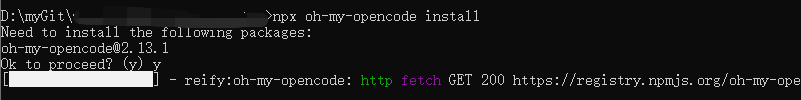
你可能会跟我一样遇到下面这个情况
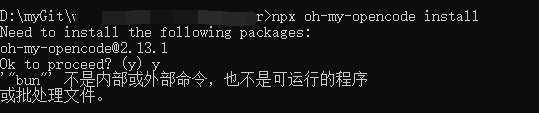
这是因为oh-my-opencode这个工具底层强烈依赖 Bun 这个运行时（Runtime），而我的Windows系统里目前没有安装Bun这时候Win + X → 再按 I，打开powershell
执行如下指令，安装Bun：
powershell -c "irm bun.sh/install.ps1 | iex"
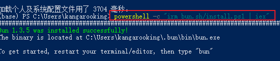
这时我们重新开一个终端窗口
重新执行oh-my-opencode的安装指令
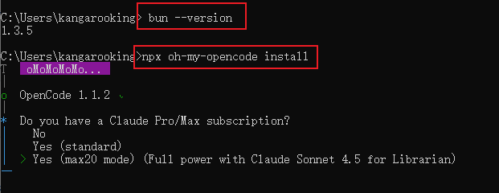
需要依次回答：
Claude 订阅情况 → 选 yes / no / max20
ChatGPT 订阅情况 → yes / no
Gemini 订阅情况 → yes / no
回车后它会自动把插件写进
%USERPROFILE%\.config\opencode\opencode.json
看到下面的情况就是安装成功啦
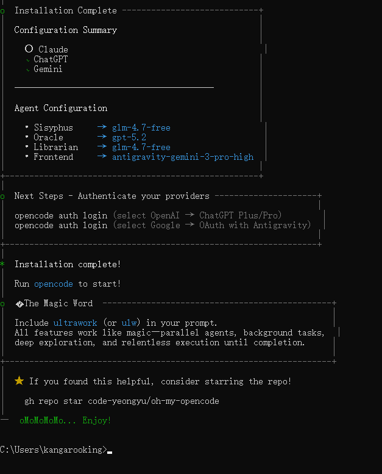
OpenCode 加上 oh-my-opencode，绝对是目前开源界最能打的 AI 编程组合之一。
如果你觉得 Claude Code 不够自由，或者不想每个月交订阅费，那么 OpenCode 绝对值得你花10分钟去尝试一下。
我实际体验了一下，确实不错，操作什么的都更方便了，关键是可以方便的接入GPT5.2、Gemini3，还可以自由切换。
指令，使用方式啥的都跟Claude Code一样，基本无感，我是觉得很香的。
准备用它来继续完善我的数字人短视频项目，后续有更深度的感受再跟大家分享。
纸上得来终觉浅，绝知此事要躬行，大家一定要行动起来。
我是袋鼠帝，持续分享AI实践干货，我们下期见～
点击关注下方账号，你将感受到一个朋克的灵魂，且每篇文章都有惊喜。
能看到这里的都是凤毛麟角的存在！
如果觉得不错，随手点个赞、在看、转发三连吧~
如果想第一时间收到推送，也可以给我个星标⭐
谢谢你耐心看完我的文章~